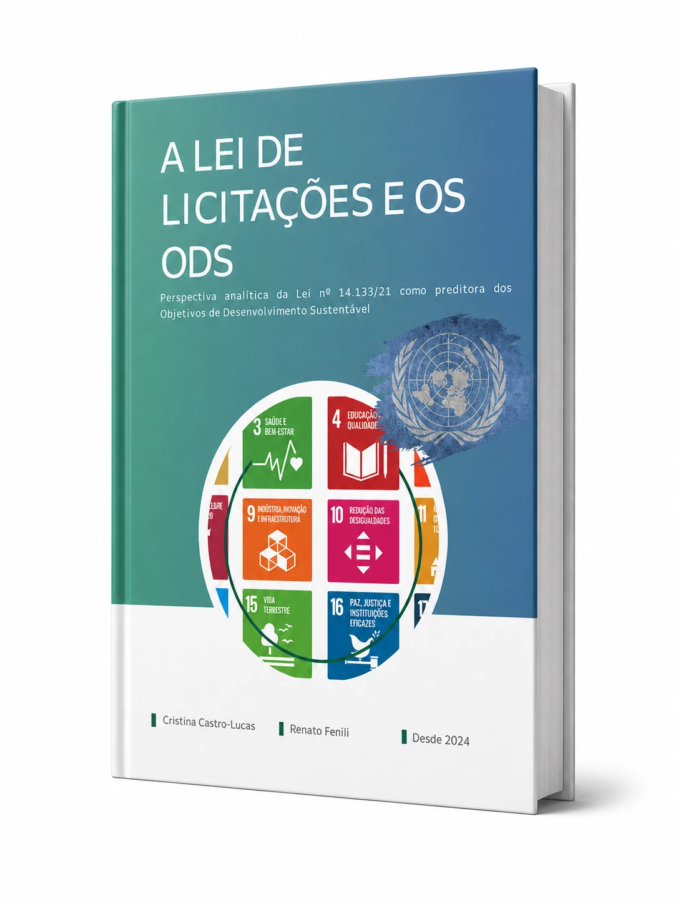
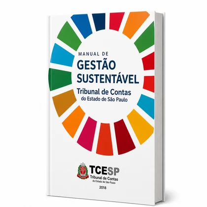
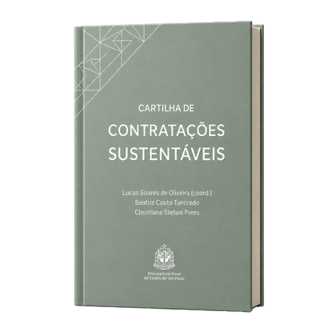
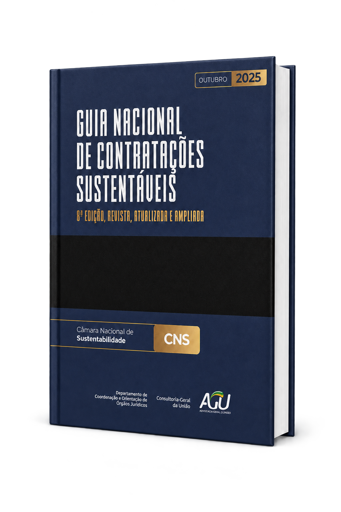
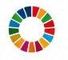

Cadernos ODS
Coleção do Estado de São Paulo com orientações práticas para aplicar os ODS 1 a 4 às contratações públicas.
Acessar coleção →Plataforma Estadual
Promovendo contratações públicas sustentáveis para um São Paulo mais responsável, eficiente e comprometido com o futuro.
Navegação rápida
Coleção do Estado de São Paulo com orientações práticas para aplicar os ODS 1 a 4 às contratações públicas.
Acessar coleção →Conheça os 17 Objetivos de Desenvolvimento Sustentável da Agenda 2030 da ONU.
Conhecer ODS →Termos técnicos explicados de forma simples e objetiva.
Acessar glossário →
Cristina Castro-Lucas | Renato Fenili
Conhecer a obra →
Conheça ações e indicadores para uma gestão pública mais sustentável.
Conhecer o manual →
Orientações práticas para incorporar sustentabilidade às licitações e aos contratos.
Conhecer a cartilha →
Orientação e segurança jurídica para contratações públicas mais sustentáveis.
Conhecer o guia →
Use o conhecimento, aplique os critérios e promova impacto positivo nas contratações públicas.